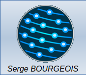

EN 🇬🇧Ultra_crypto protège les échanges de données contre les menaces liées aux ordinateurs quantiques. Les données sont masquées par un bruit variable et transformées à l'aide de réseaux euclidiens à haute dimension. Cette protection garantit la résilience post-quantique des flux interbancaires ISO 20022.
Ultra_crypto réduit la surface d'attaque en substituant aux référentiels centralisés vulnérables des couches de configuration légères et facilement reconfigurables. Son moteur, basé sur les normes natives FIPS 203, sécurise les corridors d'échanges interbancaires à l'échelle de la microseconde, permettant ainsi de répondre strictement aux exigences de résilience cryptographique des cadres DORA RTS et SWIFT CSP.
Ultra Crypto sécurise vos infrastructures contre la menace quantique sans altérer vos performances réseau. Déployable sous forme de couche logicielle légère avec une configuration minimale, il évite toute surconsommation de bande passante ou d'inefficacité liée aux signatures cryptographiques lourdes
Le code, structuré pour une intégration directe, peut être analysé via le package de documentation technique fourni afin d'être facilement pris en main et audité par des spécialistes locaux.
Sélectionnez un scénario de virement pour visualiser le routage, la taille des charges utiles réseau et la validation du double jeton de Handshake en temps réel.